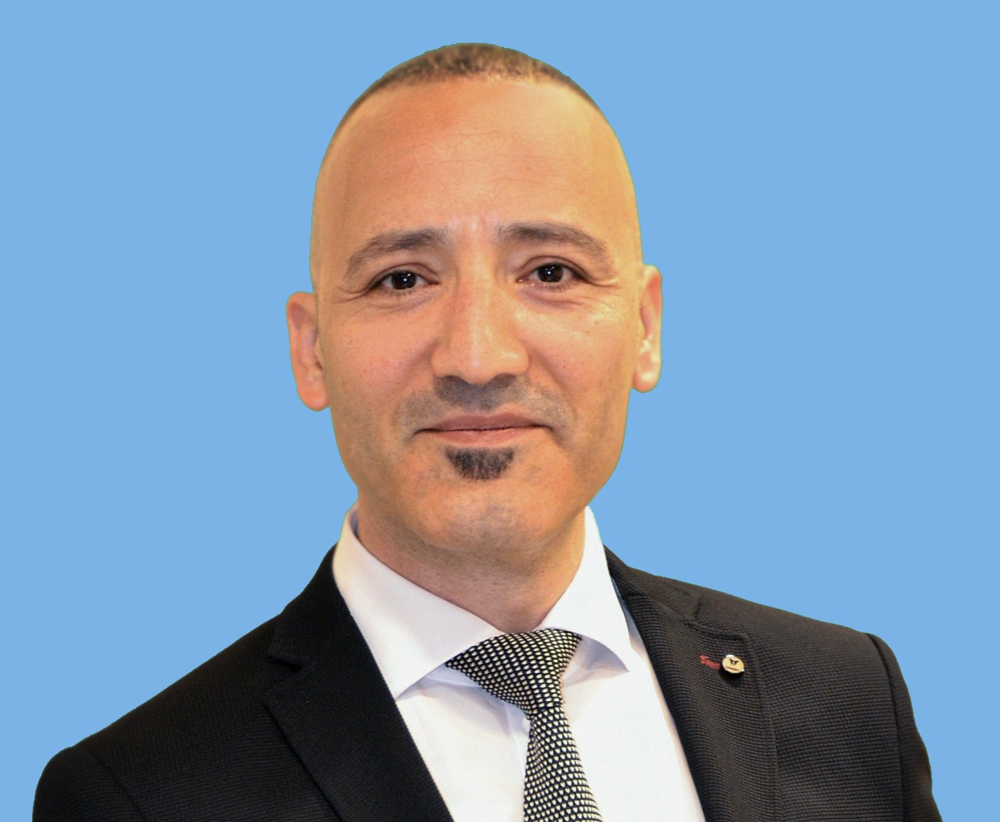

30 yıllık ticari olgunluk ve 17 yıllık BT uzmanlığıyla; global üretici vizyonunu saha gerçekleriyle buluşturan, karmaşık altyapıları kârlı iş modellerine dönüştüren bütünleşik mimari liderlik.
GenAI ve derin öğrenme iş yükleri için optimize edilmiş, yüksek performanslı (HPC) hesaplama mimarilerinin tasarımı.
Veri güvenliği, felaket kurtarma (DR) ve iş sürekliliği odaklı akıllı depolama ekosistemleri.
Zero-Trust (Sıfır Güven) mimarisi altında birleşen, yazılım tanımlı (SDN) güvenli ağ yapıları.
Sanallaştırma geçişlerinde kompleks lisanslama ve TCO optimizasyonu sağlayan yazılım stratejileri.
Çok paydaşlı şartnamelerin analizi; üretici ve kanal verimliliğini artıran, Part Number (P/N) seviyesinde optimize edilmiş Master Kitlist (BoM) tasarımı.
Proje tıkanıklıkları, acil altyapı sorunları (Troubleshooting) ve teknoloji yatırımları için anında erişilebilir, birebir (1-on-1) stratejik ve teknik destek seansları.
1994 yılından bu yana süregelen 30 yıllık profesyonel kariyer yolculuğumun son 17 yılını, BT ekosisteminin merkezinde (Entegratör ve Çözüm Mimarı rollerinde) geçirdim.
Masanın her iki tarafında (bayi ve üretici/distribütör) bulunmanın verdiği eşsiz perspektifle; ekosistemdeki operasyonel riskleri minimize eden, TCO/ROI dengesini kuran, hem iş ortaklığına hem de stratejik danışmanlığa açık güvenilir bir liman vadediyorum.

Tüm stratejik analiz, mimari kurgu ve BoM doğrulama süreçlerim, arka planda birbirine entegre çalışan 65 Otonom Modüllük özel bir yapay zeka işletim sistemi tarafından desteklenmektedir.
Planner (Planlayıcı) – Executor (Uygulayıcı) – Auditor (Denetleyici) hiyerarşisiyle çalışan bu sistem; insan hatasını sıfıra indirir, karar alma hızını eksponansiyel olarak artırır ve karmaşık BT ekosistemlerinde benzersiz bir teknolojik kaldıraç etkisi yaratır.
Bayi kanalının teknik kapasitesini artırıyor, üretici hedefleriyle pazar taleplerini teknik seviyede kusursuzca hizalıyorum.
Teknik çözümleri ROI ve TCO odaklı finansal modellere dönüştürerek, ekosistemdeki satış kapatma hızını maksimize ediyorum.
Projelerde "Sıfır Hata" prensibiyle çalışarak riskleri daha masada çözer, şartname ve BoM kaynaklı zaman/maliyet kayıplarını engellerim.
* Planner – Executor – Auditor hiyerarşisiyle çalışan bilişsel devreler.
Web sitelerinin "Ajan-Dostu" hale gelme süreci ve otonom ekonomide stratejik konumlanma.
Analizi Oku →NVIDIA Blackwell ve altyapı yatırımlarında üretim aşamasına geçiş rehberi.
Analizi Oku →